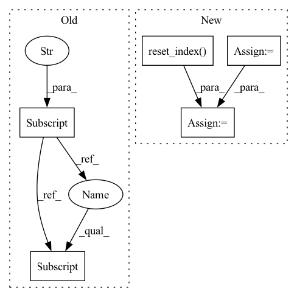

Pattern ID :17538

Before Change
)
columns = mycols_pq if engine == "parquet" else mycols_csv
columns_ctx = {}
columns_ctx["all"] = {}
columns_ctx["all"]["base"] = columns
// Iterate, apply op, and check result
for gdf in dataset.to_iter():
After Change
// Define Op
on = "id"
columns_left = list(df.columns)
columns_ext = ["id", "new_col", "new_col_2"]
df_ext_check = df_ext_check[columns_ext]
if drop_duplicates:
df_ext_check.drop_duplicates(ignore_index=True, inplace=True)
joined = nvt.ColumnGroup(columns_left) >> nvt.ops.JoinExternal(
df_ext,
on,
how=how,
columns_ext=columns_ext,
cache=cache,
drop_duplicates_ext=drop_duplicates,
)
gdf = df.reset_index()
dataset = nvt.Dataset(gdf)
processor = nvt.Workflow(joined)
processor.fit(dataset)
new_gdf = processor.transform(dataset).to_ddf().compute().reset_index()
check_gdf = gdf.merge(df_ext_check, how=how, on=on)
assert len(check_gdf) == len(new_gdf)
In pattern: SUPERPATTERN
Frequency: 3
Non-data size: 5
Instances
Fragment ID: 58016208
Project Name: nvidia/nvtabular
Commit Name: 4c92dffac4354d816178264bcfcdec722db2ec1c
Time: 2021-01-05
Author: github@benfrederickson.com
File Name: tests/unit/test_ops.py
M Class Name: AnonimousClass
N Class Name: AnonimousClass
M Method Name: test_join_external(8)
N Method Name: test_join_external(8)
M Parent Class:
N Parent Class:
M File Name: tests/unit/test_ops.py
N File Name: tests/unit/test_ops.py
M Start Line: 944
M End Line: 988
N Start Line: 548
N End Line: 590
'>
Before Change
cont_names = ["x", "y"]
columns_ctx = {}
columns_ctx["continuous"] = {}
columns_ctx["continuous"]["base"] = cont_names
for col in cont_names:
idx = np.random.choice(df.shape[0] - 1, int(df.shape[0] * 0.2))
df[col].iloc[idx] = None
After Change
idx = np.random.choice(df.shape[0] - 1, int(df.shape[0] * 0.2))
df[col].iloc[idx] = None
df = df.reset_index()
dataset = nvt.Dataset(df)
processor = nvt.Workflow(cont_features)
processor.fit(dataset)
new_gdf = processor.transform(dataset).to_ddf().compute()
for col in cont_names:
assert np.all((df[col].fillna(42) - new_gdf[col]).abs().values <= 1e-2)
assert new_gdf[col].isna().sum() == 0
'>
Fragment ID: 58016192
Project Name: nvidia/nvtabular
Commit Name: 4c92dffac4354d816178264bcfcdec722db2ec1c
Time: 2021-01-05
Author: github@benfrederickson.com
File Name: tests/unit/test_ops.py
M Class Name: AnonimousClass
N Class Name: AnonimousClass
M Method Name: test_fill_missing(4)
N Method Name: test_fill_missing(4)
M Parent Class:
N Parent Class:
M File Name: tests/unit/test_ops.py
N File Name: tests/unit/test_ops.py
M Start Line: 385
M End Line: 396
N Start Line: 207
N End Line: 223
'>
Before Change
df = df[[date_col, value_col]]
df[date_col] = pd.to_datetime(df[date_col])
df["year"] = df[date_col].dt.year
df["month"] = df[date_col].dt.month
df_pivot = df.pivot_table(index="month", columns="year", values=value_col).sort_index(ascending=False)
if normalization:
df_pivot = (df_pivot - df_pivot.mean()) / df_pivot.std()
After Change
df = df[[date_col, value_col]]
df[date_col] = pd.to_datetime(df[date_col])
df = df.sort_values([date_col]).reset_index()
length = df.shape[0]
ses_interval = []
for i in range(math.ceil(length/seasonal_interval)):
ses_interval += ([i]*seasonal_interval)
df["seasonal_interval"] = ses_interval[0:length]
df["y_axis_interval"] = df["index"] % seasonal_interval
// df["month"] = df[date_col].dt.month
df_pivot = df.pivot_table(index="y_axis_interval",
'>
Fragment ID: 58016195
Project Name: uber/orbit
Commit Name: 6909c15ac1a7dc911707af7f04eae82686912bc7
Time: 2021-11-14
Author: ariel.jiang@uber.com
File Name: orbit/eda/eda_plot.py
M Class Name: AnonimousClass
N Class Name: AnonimousClass
M Method Name: ts_heatmap(9)
N Method Name: ts_heatmap(8)
M Parent Class:
N Parent Class:
M File Name: orbit/eda/eda_plot.py
N File Name: orbit/eda/eda_plot.py
M Start Line: 40
M End Line: 58
N Start Line: 13
N End Line: 70